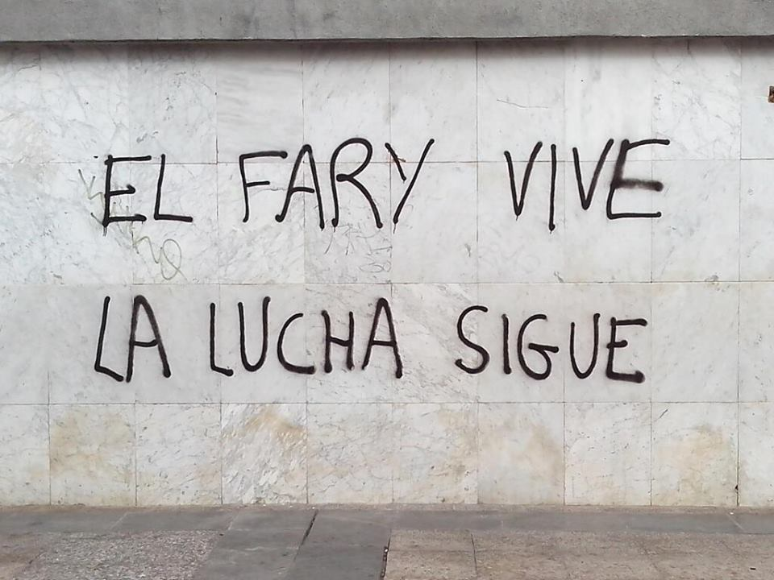

José Luis Cantero, más conocido como 'El Fary', ha fallecido esta mañana a los 69 años tras padecer un
cáncer de pulmón que le mantuvo en los
últimos meses alejado de los escenarios. La capilla ardiente del cantante y actor ha sido quedará instalada
en la sala 22 del tanatorio de
la M-30 de Madrid.José Luis Cantero, más conocido como 'El Fary', ha fallecido esta mañana a los 69 años
tras padecer un cáncer de pulmón que le mantuvo en los
últimos meses alejado de los escenarios. La capilla ardiente del cantante y actor ha sido quedará instalada
en la sala 22 del tanatorio de
la M-30 de Madrid.